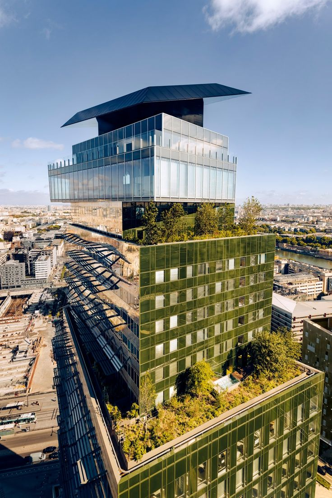
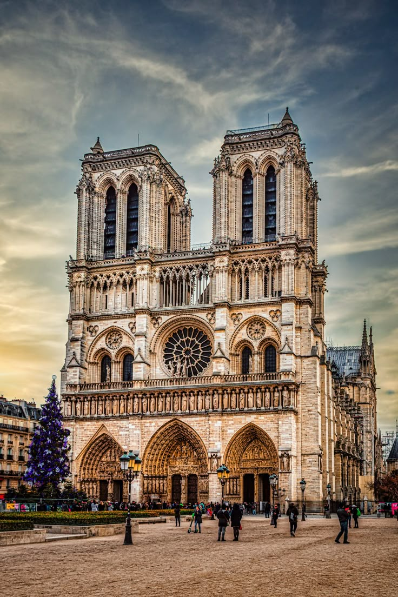
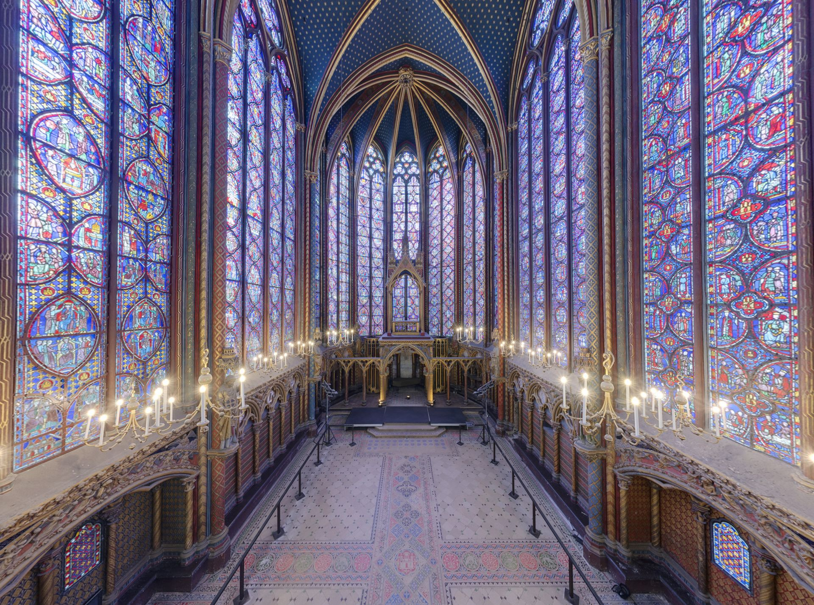
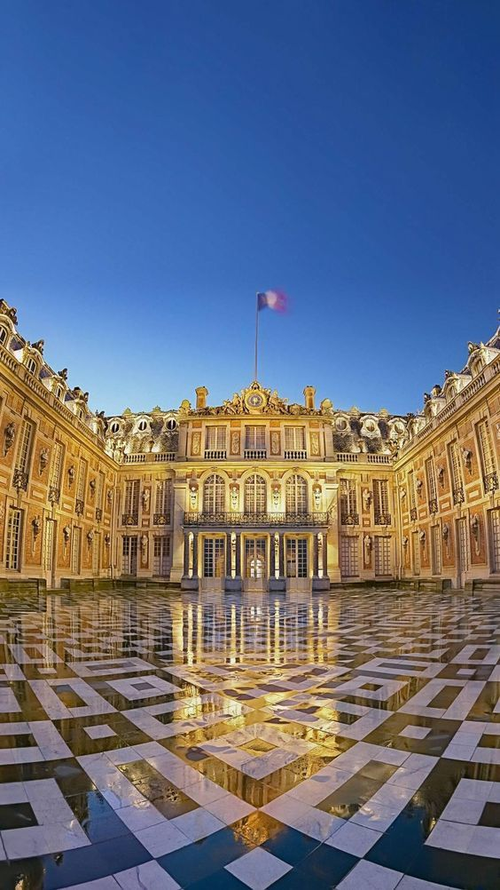
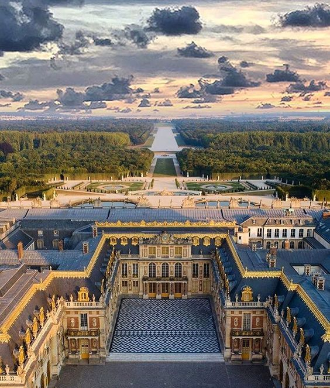
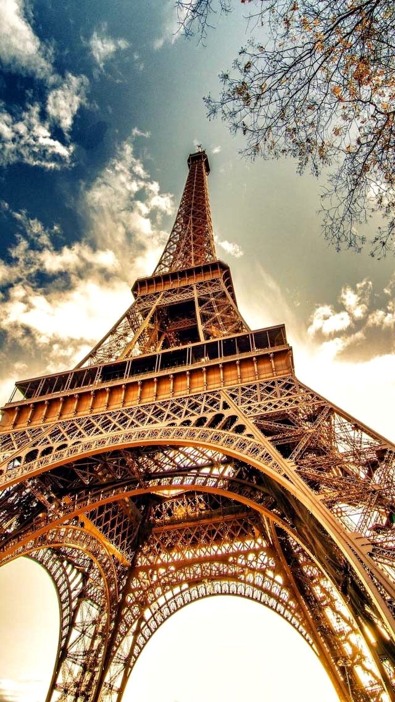
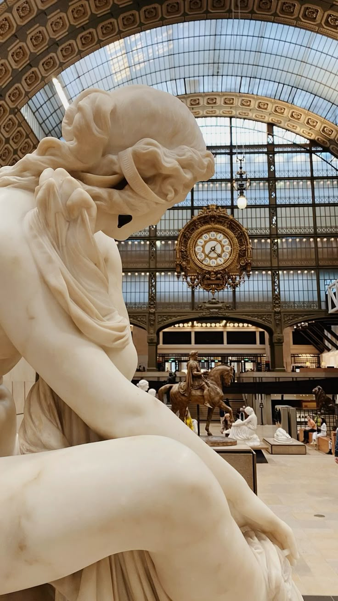
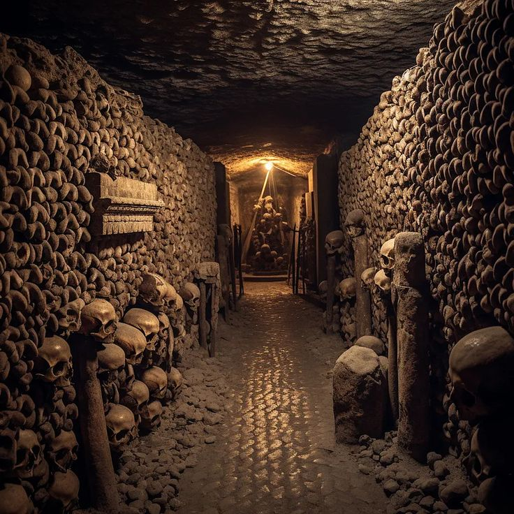

Jour 1 - Arrivée
Arrivée à Paris, installation à l'hôtel, magasinage aux alentours des Galeries Lafayette et dîner McDo en chambre.
✈️ Fun fact : L'aéroport Charles de Gaulle est le deuxième plus grand d'Europe !
Jour 2 - Île de la Cité
 Visite de la Sainte-Chapelle, de la Conciergerie, de Notre-Dame et balade dans le Quartier Latin.
🧱 Fun fact : La Sainte-Chapelle fut construite en seulement 7 ans au XIIIe siècle !
Jour 3 - Louvre & Champs-Élysées

Découverte du Louvre, balade dans les Jardins des Tuileries, arrêt au Ritz Paris et montée des Champs-Élysées.
🎨 Fun fact : Le Louvre est le plus grand musée d'art au monde !
Jour 4 - Versailles
 Excursion à Versailles, visite du Château, des Jardins et du Domaine de Trianon. Retour en fin de journée avec un arrêt aux Invalides.
👑 Fun fact : Le Château de Versailles compte plus de 2300 pièces !
Jour 5 - Tour Eiffel & croisière
 Visite de la Tour Eiffel, croisière sur la Seine, découverte du Musée d'Orsay et souper de fruits de mer.
🗼 Fun fact : La Tour Eiffel a été peinte 19 fois depuis sa création !
Jour 6 - Catacombes & shopping
Visite des Catacombes, shopping souvenir et soirée gastronomique.
☠️ Fun fact : Les Catacombes abritent les restes de plus de 6 millions de Parisiens !
Jour 7 - Départ
Dernier petit-déjeuner à l’hôtel avant le vol retour.
👋 Fun fact : Le nom 'Paris' vient du peuple gaulois des Parisii.